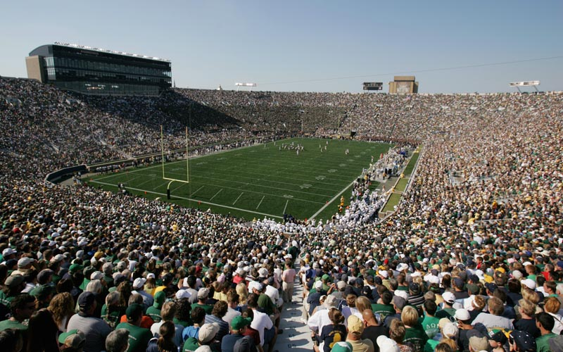

list of oldest stadiums
Churchill Downs
| Use(s) | City | Country | Year |
|---|---|---|---|
| Horse racing | Louisville, Kentucky | United States | 1875. |

Churchill Downs, located on Central Avenue in south Louisville, Kentucky, United States, is a Thoroughbred racetrack most famous for hosting the Kentucky Derby annually. It officially opened in 1875, and held the first Kentucky Derby and the first Kentucky Oaks in the same year. Churchill Downs has also hosted the renowned Breeders' Cup on eight occasions, most recently in 2011. It is next scheduled to host the Breeders' Cup in 2018. Churchill Downs Incorporated owns and operates the racetrack. With the infield open for the Kentucky Derby, the capacity of Churchill Downs is roughly 170,000.
In 2009, the Horseplayers Association of North America introduced a rating system for 65 Thoroughbred racetracks in North America. Churchill Downs was ranked number 5 on this list.
In 2014, prior to the start of their spring meet, Churchill Downs announced an increase in parimutuel takeout rates. As a result of the takeout increase, Churchill Downs was ranked number 22 in the 2014 Horseplayers Association of North America Track Ratings.
The track is named for John and Henry Churchill, who leased 80 acres (32 ha) of land to their nephew, Colonel Meriwether Lewis Clark Jr. (grandson of explorer William Clark). Clark was president of the Louisville Jockey Club and Driving Park Association, which formed in 1874. His father-in-law, Richard Ten Broeck, was an accomplished horse breeder and trainer, and introduced Clark to horse racing, attending the English Derby at Epsom Downs outside London.
Old Trafford
| Use(s) | City | Country | Year |
|---|---|---|---|
| Association Football | Greater Manchester | England | 1910. |
Old Trafford is a football stadium in Old Trafford, Greater Manchester, England, and the home of Manchester United. With a capacity of 75,643, it is the largest club stadium of any football team in the United Kingdom, the third-largest stadium and the second-largest football stadium in the United Kingdom, and the eleventh-largest in Europe. It is about 0.5 miles (800 m) from Old Trafford Cricket Ground and the adjacent tram stop.
Nicknamed "The Theatre of Dreams" by Bobby Charlton, Old Trafford has been United's home ground since 1910, although from 1941 to 1949 the club shared Maine Road with local rivals Manchester City as a result of Second World War bomb damage. Old Trafford underwent several expansions in the 1990s and 2000s, including the addition of extra tiers to the North, West and East Stands, almost returning the stadium to its original capacity of 80,000. Future expansion is likely to involve the addition of a second tier to the South Stand, which would raise the capacity to around 95,000. The stadium's record attendance was recorded in 1939, when 76,962 spectators watched the FA Cup semi-final between Wolverhampton Wanderers and Grimsby Town.
Old Trafford has hosted FA Cup semi-finals, England fixtures, matches at the 1966 World Cup and Euro 96 and the 2003 Champions League Final, as well as rugby league's annual Super League Grand Final and the final of two Rugby League World Cups. It also hosted football matches at the 2012 Summer Olympics, including women's international football for the first time in its history.
Fenway Park
| Use(s) | City | Country | Year |
|---|---|---|---|
| Baseball | Boston, Massachusetts | United States | 1912. |
Fenway Park is a baseball park located in Boston, at 4 Yawkey Way near Kenmore Square. Since 1912, it has been the home for the Boston Red Sox, the city's Major League Baseball (MLB) franchise. It is the oldest ballpark in MLB. Because of its age and constrained location in Boston's dense Fenway–Kenmore neighborhood, the park has been renovated or expanded many times, resulting in quirky heterogeneous features including "The Triangle" (below), "Pesky's Pole", and the Green Monster in left field. It is the fourth-smallest among MLB ballparks by seating capacity, second-smallest by total capacity, and one of eight that cannot accommodate at least 40,000 spectators.
Fenway has hosted the World Series ten times, with the Red Sox winning five of them, and the Boston Braves winning one.The first, in the park's inaugural season, was the 1912 World Series and the most recent was the 2013 World Series. Besides baseball games it has been the site of many other sporting and cultural events including professional football games for the Boston Redskins, Boston Yanks, and the Boston Patriots; concerts; soccer and hockey games; and political and religious campaigns.
April 20, 2012, marked Fenway Park's centennial. On March 7 of that year, the park was added to the National Register of Historic Places. Former pitcher Bill Lee has called Fenway Park "a shrine". It is a pending Boston Landmark which will regulate further changes to the park. Today, the park is considered to be one of the most well-known sports venues in the world.
Wrigley Field
| Use(s) | City | Country | Year |
|---|---|---|---|
| Baseball | Chicago, Illinois | United States | 1914. |
Wrigley Field /ˈrɪɡli/ is a baseball park located on the North Side of Chicago, Illinois. It is the home of the Chicago Cubs, one of the city's two Major League Baseball (MLB) franchises. It first opened in 1914 as Weeghman Park for Charles Weeghman's Chicago Whales of the Federal League, which folded after the 1915 baseball season. The Cubs played their first home game at the park in on April 20, 1916, defeating the Cincinnati Reds with a score of 7–6 in 11 innings. Chewing gum magnate William Wrigley Jr. of the Wrigley Company acquired complete control of the Cubs in 1921. It was named Cubs Park from 1920 to 1926, before being renamed Wrigley Field in 1927.
In the North side community area of Lakeview in the Wrigleyville neighborhood, Wrigley Field is on an irregular block bounded by Clark (west) and Addison (south) Streets and Waveland (north) and Sheffield (east) Avenues. Wrigley Field is nicknamed "The Friendly Confines," a phrase popularized by "Mr. Cub," Hall of Fame shortstop and first baseman Ernie Banks. The oldest park in the National League, the current seating capacity is 41,268; it is the second-oldest in the majors after Fenway Park (1912), and the only remaining Federal League park.
Wrigley Field is known for its ivy-covered brick outfield wall, the unusual wind patterns off Lake Michigan, the iconic red marquee over the main entrance, the hand-turned scoreboard, its location in a primarily residential neighborhood with no parking lots and views from the rooftops behind the outfield, and for being the last major league park to have lights installed for play after dark, in 1988. Between 1921 and 1970, it was also the home of the Chicago Bears of the National Football League. The elevation of its playing field is 600 feet (180 m) above sea level
Wimbledon
| Use(s) | City | Country | Year |
|---|---|---|---|
| Tennis | Wimbledon, London | England | 1922. |
Wimbledon Stadium, also known as Wimbledon Greyhound Stadium is a greyhound racing track located in Wimbledon in southwest London, England.
It also hosts stock car and other small circuit motor racing events and until 2005 hosted motorcycle speedway. The stadium has hosted the English Greyhound Derby every year since 1985.
The site will be closed in March 2017 and AFC Wimbledon are going to turn it into a football stadium and flats. The club is due to be playing at the redeveloped stadium in the summer of 2019.
Wimbledon was the first track to introduce weighing scales in 1929 at their kennels so that the racing public could be issued with the greyhounds weights before racing. The same year Harry Leader returned to Ireland and was replaced by Sidney Orton. New events called the Puppy Derby, International, Wimbledon Gold Cup and Wimbledon Spring Stakes were all inaugurated.
In December 1929 Arundel Kempton purchased Mick the Miller for £2,000 as a present for his wife placing him with Sidney Orton. The track had already been associated with Mick the Miller because the champion took up residence at the kennels of Paddy McEllistrim during the duration of the 1929 English Greyhound Derby. Con Stevens was the first Racing Manager and was instrumental in bringing the first classic race to Wimbledon in the form of the Laurels in 1930. Mick the Miller claimed his second Derby crown in 1930 propelling himself, the sport and Wimbledon into national fame.
Trainer Joe Harmon arrived from White City in 1934 and Paddy Fortune another new trainer at Wimbledon claimed a second Derby victory for the track in 1939 after the greyhound Highland Rum won the race. The 'Two Year Old Produce Stakes' was introduced in 1935 and another event called 'The Key' started in 1936.
San Siro(Giuseppe Meazza)
| Use(s) | City | Country | Year |
|---|---|---|---|
| Association Football | Milan | Italy | 1925. |
The Stadio Giuseppe Meazza (Italian pronunciation: [dʒuˈzɛppe meˈattsa]), commonly known as San Siro, is a football stadium in the San Siro district of Milan, Italy, which is the home of A.C. Milan and Inter Milan. It has a seating capacity of 80,018, making it one of the largest stadia in Europe, and the largest in Italy.
On 3 March 1980, the stadium was named in honour of Giuseppe Meazza, the two-time World Cup winner (1934, 1938) who played for Inter Milan and briefly for Milan in the 1920s, 1930s and 1940s.
The San Siro is a UEFA category four stadium. It hosted six games at the 1990 FIFA World Cup and four European Cup finals, in 1965, 1970, 2001 and 2016.
The stadium is also a lauded large concert venue, with Bruce Springsteen calling the San Siro crowd "the best audience in the world.
Construction of the stadium commenced in 1925 in the district of Milan named San Siro, with the new stadium originally named Nuovo Stadio Calcistico San Siro (San Siro New Football Stadium).The idea to build a stadium in the same district as the horse racing track belongs to the man who then was the president of A.C. Milan, Piero Pirelli. The architects designed a private stadium only for football, without the athletics tracks which characterized Italian stadiums built with public funds.The inauguration was on 19 September 1926, when 35,000 spectators saw Inter Milan defeat Milan 6–3. Originally, the ground was home and property of AC Milan. Finally, in 1947, Inter, who used to play in the classy Arena Civica downtown, became tenants and the two have shared the ground ever since.
Notre Dame Stadium
| Use(s) | City | Country | Year |
|---|---|---|---|
| Association Football | Notre Dame, Indiana | United States | 1930. |

The Notre Dame Stadium is an outdoor football stadium in Notre Dame, Indiana, the home field of the University of Notre Dame Fighting Irish. It is located on the university's campus, just north of South Bend.
Opened 87 years ago on October 4, 1930, the stadium seating capacity was nearly 60,000 for decades. More than 21,000 seats were added for the 1997 season, which increased the capacity to over 80,000. The playing surface was changed to FieldTurf in 2014, after 84 seasons on natural grass.
The stadium opened its gates on October 4, 1930, replacing Cartier Field. The total cost of construction exceeded $750,000 and the original seating capacity was 54,000. Head coach Knute Rockne played a key role in its design, keeping the space between the playing field and the stands to a minimum. The stadium is patterned, on a smaller scale, after Michigan Stadium, the main difference being the tunnel location. In 1929, plans were started by Osborn Engineering of Cleveland, selected for their experience in designing Yankee Stadium and Fenway Park. The original stadium held 59,075 people, measured a half-mile (800 m) in circumference, stood 45 feet (14 m) high, and featured a glass-enclosed press box rising 60 feet (18 m) above ground level. Initial stands reached 55 rows. The building was built by the Sollitt Construction Company of South Bend. Earth preparation began in the fall of 1929, but due to an unusually cold fall and winter, above ground construction did not begin until April 2, 1930. This building was effectively built in six months. Over two million bricks were used in the construction of the walls and the concrete was placed in a monolithic continuous placement by section. There were over 300 workers on the site at most times and they worked five 10-hour days and one six-hour day on Saturdays. The average worker was paid one dollar a day plus lunch with the more skilled workers earning up to five dollars a day.

Sources: Wikipedia, Google photos